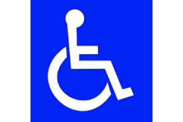

Unlike other systems that rely on visible recognition, EasyGate communicates 'silently' with advanced encryption, making it perfect for high-security locations.
ABOUT EASYGATE
EasyGate is transforming gate access by offering a seamless, secure, and fully automated solution. No more fiddling with remotes or apps—EasyGate ensures that your vehicle is detected automatically, giving you peace of mind with every entry and exit. It’s designed to assist everyone, including people with disabilities and seniors, offering an effortless, stress-free experience.
FEATURES
Hands-Free Access
EasyGate detects your vehicle automatically, eliminating the need for apps or remotes. This helps save time and avoids traffic jams caused by waiting to manually open the gate.

Advanced Security
Equipped with advanced technology, EasyGate grants access only to authorized vehicles, ensuring unbeatable security that resists even sophisticated tools like Flipper Zero.
Easy Installation
Quick and simple installation with minimal setup, making it easy to upgrade your security system.

Supports the Elderly and People with Disabilities
Designed for simplicity, EasyGate provides hassle-free access for seniors and individuals with mobility challenges, eliminating the need for complicated controls.

Intuitive Database Management
EasyGate features a user-friendly, intuitive interface for managing the database of authorized vehicles, making it easy to add or remove access without hassle.
Offline for Security
With no internet connection required, EasyGate eliminates any risk of hacking or data breaches, giving you complete peace of mind.
WHY EASYGATE?
With increasing traffic and limited parking spaces, gate break-ins using generic tools are becoming more common. These tools attempt to exploit vulnerabilities to gain unauthorized access.
EasyGate’s exclusive encryption technology ensures your access remains fully secure, making it impenetrable to common tools or traditional methods.
CONTACT US
EasyGate is a product of EATS-SYSTEMS. To schedule installations, please contact us through EATS-SYSTEMS.com.